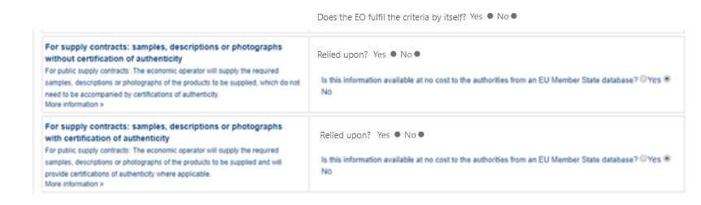

Selection criteria
'The contracting body shall provide the exclusion grounds and selection criteria for its tendering process as structured information - via and ESPD template or structured list of criteria set out in a call for tender."
This topic, selection criteria, provides information on how to implement the formal requirements set out in the eSens ESPD BIS 41 - Single European Document (Version 2.0.0) document, specifically the global requirements related to selection criteria: br41-002, tbr070-010, tbr070-013, tbr070-018.
As with the exclusion criteria, and following requirement tbr70-013, the selection criteria have been grouped under different categories. The figure below is intended to identify and list these categories for the selection criteria (branches in text boxes), and specific subgroups within each category.
Each branch in this 'criteria classification' corresponds to one data structure that is identical for all the leaves under that branch (e.g. compare the names of the boxes with the tabs and ElementType column of the spreadsheets containing ESPD-criterion data structures).
Figure 1. Selection criteria classification
Lot Management approach for Selection Criteria
For Selection Criteria, the buyer may specify the Lots that apply to each selection criteria by using the element cac:ProcurementProjectLotReference inside the element cac:TenderingCriterion.
The image below shows the UBL-2.3 schema for TenderingCriterion:
Figure 2. cac:TenderingCriterion/cac:ProcurementProjectLotReference
The ESPD 3.0.0 allows different lots for different Selection Criteria, whereas the ESPD 4.0.0 allows, in addition, different lots (or set of lots) for different requirements.
See also section "Lot Management in ESPD Request".
Initial question for the EO
In this version of ESPD, a new data structure was added to the selection criteria to collect more information about the EO and their fulfilment of the selection criteria. The UUID identifying the group is 0e50931d-4d39-4f1d-9fdc-b2cf16c0807a. It is a common structure reused over selection criteria.
Data structure
To view the criteria, consult the Criterion File.
Suitability
Related information requirements
See the formal requirements related to 'Suitability' criteria in the BIS 41 - European Single Procurement Document (Version 2.0.0), and more specifically, the requirement tbr70-003
Suitability (enrolments)
For each criteria regarding suitability, the buyer should be able to provide the following: * the register type (Occupations code list, see ESPD-CodeLists.xlsx) for the criterion "Enrolment in a relevant professional register" and, * the name and its URL and for other criteria related to registries.
Data Structure
A few details regarding the data structure for Suitability selection criteria:
-
It allows the definition of multiple national sub-criteria (to be retrieved from e-Certis): cardinality "0..n" of the SUBCRITERION group;
-
It also allows the buyer to specify multiple groups of REQUIREMENT(s) (in this case to specify which registers the economic operator should be registered in).
-
Regarding the groups of questions, notice that the main question is to get confirmation from the economic operator that it fulfils the criterion (if "Yes" the economic operator is registered). In answering "No" a sub-group of one QUESTION must be shown (the one asking the economic operator to provide the reason why it is not registered in the register specified by the buyer).
See Criterion 25 (C25) in the Criterion File
XML Example
The xml of the criterion is best viewed directly in the xml examples made available in release v4.0.0 on GitHub:
The XML example illustrates how the ESPD would look like when the Lots are specified.
|
The code list 'occupation' is used to determine the area to which the EO should be registered in. It comes from the ESCO classification, in case the Buyer do not find the appropriate code to define the type of professional enrolment it can select code '0000.0' which stands for other. Then would be able to include the type using a text box. |
Data Structure (service contracts)
See Criterion 27 (C27) in the Criterion File
Turnovers
Related information requirements
See formal requirements related to 'Turnover' criteria ESPD in the BIS 41 - European Single Procurement Document (Version 2.0.0), and more specifically the requirement tbr70-008
Differences between 'general and specific' and 'yearly and average' turnovers
-
General turnover refers to the general turnover of the economic operator in a period of years and regardless of the nature of the contract, normally the last three or five years (as required in the contract documents or the ESPD).
-
Specific turnovers refer to the turnover of the economic operator resulting from the activity of the economic operator in the business area covered by the contract;
-
As far as the data structures are concerned, they can be classified in two groups 'yearly' and 'average':
-
For general and specific yearly turnovers the economic operator specifies a turnover amount (and currency) per year, e.g. one amount for 2016, one amount for 2015, one amount for 2014, etc.
-
For general and specific average turnovers, given the n last years (specified in the ESPD, notices or procurement documents) the economic operator adds all the yearly turnovers of those n years, divides the sum by n and provides the resulting amount.
-
The classification codes for the different turnovers are:
-
(Yearly)
-
gen-year-to
-
aver-year-to
-
-
(Average)
-
spec-aver-to
-
spec-year-to
-
-
-
For the general yearly turnover the buyer can specify the number of the past recent years for which it will require Turnovers, and also the minimum amount it expects from the economic operator. The economic operator should only see the same number of groups of fields 'amount + period' than the number of minimum amounts the buyer required.
For the average yearly turnover the buyer can specify the number of fiscal years * ("QUANTITY_YEAR") encompassing the yearly turnovers for which the average is to be calculated; the *minimum amount for which the EO’s average yearly turnover must equal or be greater; and the currency.
For the specific yearly turnover the buyer can specify the number of fiscal years for which the EO will have to provide turnovers (e.g. last 5 years); the Minimum amount expected from the EO, for which each specific yearly turnover must equal or be greater; and the currency.
For the specific average turnover the buyer can specify the number of the past recent fiscal years for which the EO will need to provide the Average Turnover; e.g. last 3 years; the minimum amount expected from the EO, for which the EO’s average yearly turnover must equal or be greater; and the currency.
General turnover
The contracting can specify the number of the past recent years for which it will require turnovers, but also the minimum amount it expects from the economic operator.
Mock-up - buyer perspective
Notice that the buyer can add and remove as many groups of minimum required amounts as needed (in the example below the software application limits the number to five, see tool-tip next to the button "Add"). These requirements are, of course, particular to this procurement procedure and were not defined by the Member State in e-Certis.

Figure 3. 'General Yearly Turnovers' buyer mock-up for a a common threshold for all years requested.

Figure 4. 'General Yearly Turnovers' Buyer mock-up when applying different turnover per year requested.

Data Structure
See Criterion 29 (C29) in the Criterion File
Mock-up - buyer perspective
For criteria of type "average yearly turnover", the following fields can be specified by the buyer:
-
The number of fiscal years encompassing the yearly turnovers for which the average is to be provided by the economic operator (EO);
-
The minimum amount for which the EO’s average yearly turnover must be equal or greater;
-
The currency;
Notice that as for the rest of criteria, the Member State may specify national sub-criteria in e-Certis for this criterion.

Figure 6. 'Average yearly turnover' Buyer mock-up
Mock-up - economic operator perspective
In turn, the economic operator:
-
Will have to provide the average amount and currency for the required period; and
-
May provide some additional information in a free-text field.

Figure 7. 'Average yearly turnover' EO mock-up
Data Structure
See Criterion 30 (C30) in the Criterion File
XML Example
The xml of the criterion is best viewed directly in the xml examples made available on GitHub:
Specific yearly turnover
One characteristic of the "specific" turnovers is that the buyer requires to know which is the economic operator’s turnover for a concrete business domain. The only way of responding that requirement is either by describing the domain in a free-text field (DESCRIPTION ResponseDataType) in Data structures.
Notice that in the Mock-ups and the Data Structures, below, both options are available to the economic operator.
Mock-up - buyer perspective
For specific yearly turnover criterion the following fields can be required by the buyer (CA):
-
The number of fiscal years for which the economic operator (EO) will have to provide turnovers; e.g. last 5 years;
-
The minimum amount expected from the EO, for which each specific yearly turnover must equal or be greater;
-
The currency.

Figure 8. 'specific yearly turnover' Buyer mock-up
Mock-up - economic operator perspective
Notice that in this example:
-
The buyer required specific yearly turnovers for the past five years;
-
The minimum amount required by the buyer, and the currency for that amount (the EO should be able to express an identical or greater economic value in a different currency);
-
The software application has produced up to five groups of properties for each of the last five Fiscal Years (FY1 to FY5);
-
The economic operator has provided answers for all the properties of each Fiscal Year.

Figure 9. 'specific yearly turnover' EO mock-up
Data Structure
Notice that:
-
The criterion may have one or more linked national sub-criteria downloaded from e-Certis (SUBCRITERION structure, cardinality 0..n);
-
The buyer is able to specify the number of fiscal years (REQUIREMENT 'Number of fiscal years');
-
The description of the business area is a text-field;
-
The buyer does also specifies the minimum amount required for this specific turnover.
-
The rest of the criterion are the questions for the economic operator to answer: period and amount (and currency in the amount attribute @currencyID).
See Criterion 32 (C32) in the Criterion File
XML Example
The xml of the criterion is best viewed directly in the xml examples made available on GitHub:
Specific average turnover
As for the specific yearly turnover, in the specific average turnover the buyer is interested in knowning the turnover for a concrete business domain. Hence the fields business domain description in the mock-ups and data structures.


Data Structure
Notice that this specific average turnover structure is 'practically identical' to the data structure of the specific yearly turnover criterion. The only difference is that the cardinality of the amount is 1 (instead of 1..n).
See Criterion 31 (C31) in the Criterion File
Financial ratios
Related information requirements
See formal requirements related to 'Turnover' criteria ESPD in the BIS 41 - European Single Procurement Document (Version 2.0.0), and more specifically the requirement tbr70-013
REQUIREMENT |
The buyer must use the BACH Banque France Code List for the specification of financial ratios. |
Mock-ups - buyer perspective
The buyer has selected the financial ratio as one of the selection criteria that will go into the ESPD Request document:

Figure 12. 'Financial ratio' buyer mock-up
In ESPD the buyer specifies procurement procedure-specific requirements, see data structure below.
Mock-up - economic operator perspective
The economic operator does only have to provide the numeric value for the financial ratio (which should be greater than the minimum requirement specified by the buyer ):

Figure 13. 'Financial ratio' EO mock-up
Data Structure
|
REQUIREMENT(s) specified by the buyers can be place outside a group of QUESTION(s) (see any other previous criteria) or inside a group of QUESTION(s), which is the case for financial ratios, as you can see in the data structure for this criterion. |
See Criterion 34 (C34) in the Criterion File
Risk indemnity insurance
Related information requirements
See formal requirements related to selection criteria in the BIS 41 - European Single Procurement Document (Version 2.0.0).
The only criterion defined under this data structure is classified with the code:
-
indem-ins
Mock-ups - buyer perspective
The buyer has selected the option professional risk indemnity insurance for its inclusion in the ESPD Request. Additionally the buyer can specify REQUIREMENT(s) specific to the procurement procedure. There are two situations that need to be distinguished here, when the procurement procedure is divided into Lots and when it is not.
For both situations (Lots and Lot): The buyer can require data from the economic operator in relation to up to four types of insurances. Software applications should control that: no more groups of amount an currency data are presented to the economic operator; and that there are not two amounts referring to the same type of insurance;

Figure 14. 'Risk indemnity insurance' Buyer REQUIREMENT(s) edition (Procedure with no lots, which actually means 1 Lot)
When the procedure is divided into Lots: The buyer can specify the Lots one particular insurance applies to.

Figure 15. 'Risk indemnity insurance' Buyer REQUIREMENT(s) edition (Procedure with more than one Lot).
Mock-up - economic operator perspective
The only data the economic operator needs to provide is the amount covered by the insurance and the currency for that amount:

Figure 16. 'Economic operator indemnity insurance' EO mock-up
Note that the EO should provide an answer (ESPD Response) for every Lot that tenders. Meaning that if the Selection Criteria applies to different Lots (as can be read in the mockup), the EO should submit the data for the number of lots that apply.
Data Structure
This structure is quite particular. Notice that:
-
Multiple national sub-criteria can be defined (as for the rest of criteria); and additionally
-
Multiple groups of REQUIREMENT(s) and QUESTION(s) can be defined by the buyer :
-
An additional sub-group for the type of insurance and the minimum amount required by the CA.
-
A sub-group of three QUESTION(s) for the economic operator to answer (amount, and two questions to be answered as "Yes" or "No"; and
-
The possibility of attaching an evidence per each insurance.
-
The XML example below illustrates this.
See Criterion 35 (C35) in the Criterion File
Other economic or financial requirements
Related information requirements
See formal requirements related to selection criteria in the BIS 41 - European Single Procurement Document (Version 2.0.0).
The only criterion defined is classified with the code:
-
finan-requ
Buyer perspective
The buyer has selected the option other economic or financial requirements for its inclusion in the ESPD Request.
Additionally the buyer can specify REQUIREMENT(s) specific to the procurement procedure. There are two situations that need to be distinguished here, when the procurement procedure is divided into Lots and when it is not.
Thus, for this criterion the buyer will be able to:
-
Either add multiple requirements. For each requirement, the Buyer will need to provide the description of the requirement, the minimum amount and currency and the start and end date; or it will need to provide the minimum rating and the rating schema.
-
In the ESPDResponse, the EO will be required to provide, for each requirement, the amount and currency.
-
When the procedure includes more than one Lot: The buyer can specify the Lots the criteria applies to.
Notice that in the mock-up below the first requirement is about an economic of financial requirement whilst the second requirement is about a rating requirement. See data structure and XML example for more details on this distinction.
Mock-up - economic operator perspective
The economic operator, in its view, sees all the requirements defined by the buyer and responds to this requirements with an amount and currency. See XML example below to identify where these data are placed in the XML instance.

Figure 17. 'Other economic or financial requirements' EO mock-up
Note that the EO should provide an answer (ESPD Response) for every Lot that tenders. Meaning that if the Selection Criteria applies to different Lots (as can be read in the mockup), the EO should submit the data for the number of lots that apply.
Data Structure
Notice the following aspects from the 'other economic or financial requirements':
-
It allows for capturing multiple national criteria;
-
It specifies the Legislation component for the EU parent criterion. So far so good, no differences until now;
-
There’s a group of REQUIREMENT(s) and QUESTION(s).
-
The group of REQUIREMENT(s) defines a caption that is kep empty (no name, no description, no value. You will have noticed this also in other criteria. The reason for having this dummy CAPTION is that the UBL-2.3 model requires always at least one cac:TenderingCriterionProperty element instance inside a group or sub-group of properties;
-
The most important part comes now: You have a kind of choice here: one of the two subgroups the data will be shown (or not) depending on the answer of the buyer * to the REQUIREMENT: *Select the type of requirement. If the CA’s answer was economic or financial requirement the application takes it as a true; otherwise it is considered false:
-
On true (see the group code on the right side of the data structure) three REQUIREMENT(s) will be shown to the economic operator: description, minimum amount and period. For this REQUIREMENT the economic operator will see all these requirements and will have to provide an amount.
-
On false (see the group code on the right side of the data structure) three REQUIREMENT(s) will be shown to the economic operator: minimum rating and rating scheme. For this REQUIREMENT the economic operator will see all these requirements and will have to provide a rating.
-
See Criterion 36 (C36) in the Criterion File
References on similar works, deliveries or services
Related information requirements
See formal requirements related to selection criteria in the BIS 41 - European Single Procurement Document (Version 2.0.0).
There are three criteria with the same data structure (works, supplies and services references):
-
qa-certif-inst
-
qu-certif-indep
-
envir-certif-indep
|
Difference between 'total amount' and 'specific amount' in a reference The total amount refers to the amount of the contract, the specific refers to the amount of the contract a concrete reference is linked to. Two examples could be:
|
Mock-ups - buyer perspective
As in the previous example, in this example about the references the buyer requires references for the contract, the nature of which is also about works.
For the ESPD, the buyer can specify these REQUIREMENT(s):
-
The minimum number of references expected;
-
One or more specific requirements in the form of free-texts (notice the buttons to add or remove the requirements.

Figure 18. 'References' buyer REQUIREMENT(s) edition mock-up
Mock-ups - economic operator perspective
-
In this view for the economic operator (EO) can see the lots and requirements specified by the buyer (CA), lower left side of the mock-up.
-
The EO can also list those Lots it tenders to that apply to the particular reference it is providing. Software applications should validate that the Lots supplied by the EO for a reference are in the range of those specified by the buyer.
-
The EO can provide a description for the reference, the total amount of the contract in which the reference was included, the amount for the specific works referenced, the period of execution and one or more groups of data about the recipients (name/description, contact person name and contact e-mail).
-
The EO can also state that one reference is confidential, in which case the reference will only be accessible to the evaluation team.

Figure 19. 'References' EO mock-up
|
Non-validation of text content NOTICE that the EO has made a mistake and for a "Works contracts: performance of works for the specified type" it is describing a Service. The Schematron-based validation solution cannot validate this situation as the description is a textual value. For details on the Schematron-based validation solution see section 7. Validation. |
Data Structure
The data structure for references caters for:
-
The definition of multiple national criteria associated to the EU criterion specified in e-Certis;
-
The creation of the Legislation component associated to the EU criterion;
-
One group of REQUIREMENT(s) for the buyer to specify the general requirements for this criterion (e.g. Lots the references apply to, minimum number of references);
-
Multiple groups (cardinality 1..n) of questions for the economic operator to answer; which in this case are multiple references to works about which the EO has to provide information and the lots the EO tenders to related to the references.
See Criterion 37 (C37) in the Criterion File
Abilities
Related information requirements
See formal requirements related to selection criteria in the BIS 41 - European Single Procurement Document (Version 2.0.0).
The ESPD, supplies data structures facilitating a greater semantic interoperability:
-
One data structure to define two ability criteria related to technicians:
-
Technicians or technical bodies for quality control (qual-cont-tech)
-
For works contracts: technicians or technical bodies to carry out the work (work-tech)
-
-
One data structure to define a miscellanea of five criteria that can share the same data structure:
-
Technical facilities and measures for ensuring quality (qual-facil)
-
Study and research facilities (research-fac)
-
Supply chain management (chain-manage)
-
Environmental management measures (envir-measure)
-
Tools, plant or technical equipment (tech-equip)
-
-
One data structure to define abilities related to the education and professional qualifications of the contractor or service provider:
-
Educational and professional qualifications (qualification)
-
And one more data structure to define the allowance of checks: * Special requirements check (spec-req-check)
-
One data structure to define two abilities related to the contractor’s staff:
-
Number of managerial staff (manage-staff)
-
Average annual manpower (year-manpower)
-
Abilities (I) - Persons
|
Note that in this version of ESPD there are not weights to keep the model as simple as possible. |

Mock-ups - economic operator perspective
As you see from the mock-up below the economic operator can add and remove technicians and bodies associated to one CA’s REQUIREMENT. In this case the REQUIREMENT specified by the buyer is the type of technical assistance the EO’s teams must provide.

Figure 21. 'Abilities (I)' EO mock-up
Data Structure
See Criterion 40 (C40) in the Criterion File
XML Example
The xml of the criterion is best viewed directly in the xml examples made available on GitHub:
Data Structure
See Criterion 42 (C42) in the Criterion File
XML Example
The xml of the criterion is best viewed directly in the xml examples made available on GitHub:
Data Structure
See Criterion 47 (C47) in the Criterion File
|
Use of the EC’s ESCO Taxonomy for Skills, Competences and Occupations (and Qualifications) Notice that in the Data Structure above there is the field ''If possible please indicate the ESCO identifier for this qualification'', and that the expected type of data is 'URL'. ESCO is a multilingual classification that identifies and categorises skills, competences, qualifications and occupations relevant for the EU labour market and education. It is being developed (maintained) by the European Commission since 2010. The taxonomy can be downloaded from this link. The reason why the expected type of data is a URL is because in ESCO taxonomy each concept is identified with a URI (A Uniform Resource Identifier, and URI can be used as locators, i.e. URL are URIs). ESCO is legally supported by the REGULATION (EU) 2016/589 of 13 April 2016 (the EURES Regulation) and two Implementing Decisions:
|
XML Example
The xml of the criterion is best viewed directly in the xml examples made available on GitHub:
Mock-ups - buyer perspective
The buyer has selected the 'allowance of checks' (in ESPD-criterion will be shown as "Special requirement check", spec-req-check) option in a ESPD Request builder software application GUI. This software application will create a criterion of this in the ESPD Request XML instance with zero, one or more REQUIREMENT(s) by the EO.
The buyer (CA) can specify none, one or several REQUIREMENT(s). In this case a REQUIREMENT is a descriptive text provided by the buyer where the criterion is better explained or where certain conditions relating to the criterion. In this example the buyer is specifying which type of premises it wants to check and for which reasons.

Figure 22. Special requirements check buyer REQUIREMENT edition mock-up
Mock-ups - economic operator perspective
The EO should see as many boxes (groups) of REQUIREMENT + QUESTION as REQUIREMENT(s) specified by the CA. In this case the economic operator (EO) sees one REQUIREMENT associated to one QUESTION. The expected answer is Yes or No.
Figure 23. 'Special requirements check' EO mock-up
Data Structure
The data structure below shows how this criterion is organised. Notice the following:
-
The Member State can associate one or more national criteria to this EU criterion (element sub-criterion, cardinality 0..n).
-
The criterion can be associated to one or more pieces of legislation (this spread-sheet does not focus on the edition of the legislation element; the transformation style-sheet will generate dummy values for this element).
-
At least one REQUIREMENT group will always be created. If the buyer specified more than one REQUIREMENT(s), more groups of REQUIREMENT + QUESTION would be added to the ESPD Request XML instance.
-
If not specific REQUIREMENT is issued by the CA, the REQUIREMENT group should equally be created and the REQUIREMENT value should be replaced with a literal (e.g. 'No specific requirements').
See Criterion 48 (C48) in the Criterion File
XML Example
The xml of the criterion is best viewed directly in the xml examples made available on GitHub:
Data Structure
See Criterion 49 (C49) in the Criterion File
Subcontracting proportion
Related information requirements
See formal requirements related to selection criteria in the BIS 41 - European Single Procurement Document (Version 2.0.0).
There is only one criterion with a simple data structure, classified as:
-
suncont-port
Mock-ups - buyer perspective
The buyer selects the criterion to be included in the ESPD Request:

Figure 24. 'Subcontracting proportion' buyer mock-up
Mock-ups - economic operator perspective
The economic operator has to provide a descriptive response in a free-text field:

Figure 25. 'Subcontracting proportion' EO mock-up
Data Structure
See Criterion 51 (C51) in the Criterion File
Related information requirements
See formal requirements related to selection criteria in the /BIS 41 - European Single Procurement Document (Version 2.0.0).
There are two criteria that share the same data structure, classified as:
-
wo-autent
-
w-autent
Mock-ups - buyer perspective
The buyer selects the criteria that have to be included in the ESPD Request, e.g.:

Figure 26. 'Samples and certificates' buyer mock-up
Mock-ups - economic operator perspective
The economic operator only has to answer Yes or No. The GUI does not react in any way either the EO clicks one or the other (which is not the case for other criteria, see for example the behaviour of the criteria about 'quality assurance' below in further sections).

Figure 27. 'Samples and certificates' EO mock-up
Data Structure
See Criterion 52 (C52) in the Criterion File
Quality assurance
Related information requirements
See formal requirements related to selection criteria in the BIS 41 - European Single Procurement Document (Version 2.0.0).
Mock-ups - buyer perspective
In ESPD the buyer can specify a REQUIREMENT. In this example it provides the name of the ISO it expects the economic operator to be conformant to.

Figure 28. 'Quality Assurance schemes and environmental management standards' buyer mock-up
Mock-ups - economic operator perspective
Notice that, as for the ESPD the economic operator (EO) has to answer Yes or No. In the case the EO answers No the box with the text "If not, please explain why and specify which other means …" is shown. This box is not shown for the Yes answer. This behaviour can be controlled with the ONFALSE code of the sub-group of QUESTION(s) (see data structure and XML example below, too).
When the EO answers Yes it will be asked whether online evidences are available online or not. This is controlled by the code ONTRUE assigned to the sub-group of QUESTION(s) about the evidence (see data structure and XML example).

Figure 29.'Quality Assurance schemes and environmental management standards' EO mock-up
Data Structure
Notice the following:
-
In principle the buyer has to provide at least one REQUIREMENT. But it might decide not to provide any requirement at all. In this case do not to alter the data structure (e.g. not to remove the REQUIREMENT_GROUP) and to provide a text for REQUIREMENT such as, for example, 'No specific requirements'.
-
The ONFALSE code for the sub-group containing the sentence thats starts with 'If not, please explain why…' means: if the answer to the previous question was No then this sub-group must be shown/processed.
-
If ONTRUE (answer to previous QUESTION = Yes) then the question about the online evidences is shown/processed.
See Criterion 54 (C54) in the Criterion File
Other aspects of participation and selection
Related information requirements
In restricted procedures, competitive procedures with negotiation, competitive dialogue procedures and innovation partnerships, buyers may limit the number of candidates meeting the selection criteria that they will invite to tender or to conduct a dialogue.
To cover this possibility, the ESPD Regulation introduces a section named "Reduction of the number of qualified candidates" with one criterion that reads as follows:
"The economic operator declares that it meets the objective and non-discriminatory criteria or rules to be applied in order to limit the number of candidates in the following way:".
This ESPD-EDM specification provides a specific data structure that allows the buyer to specify these objective and non-discriminatory criteria and for the economic operator to declare that it meets them.
However, in this version of the ESPD-EDM he behaviour of this criterion is linked to eForms instantiation of the aim of using the reduction of candidates. Meaning that if in eForms CN this is not stated, it will not be part of the ESPD-Request nor Response.
Data structure
See Criterion 57 (C57) onwards in the Criterion File